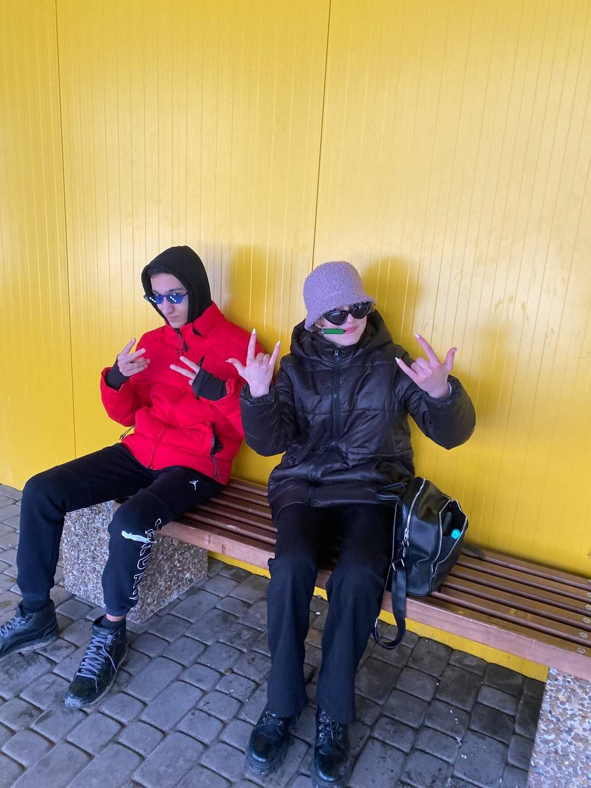
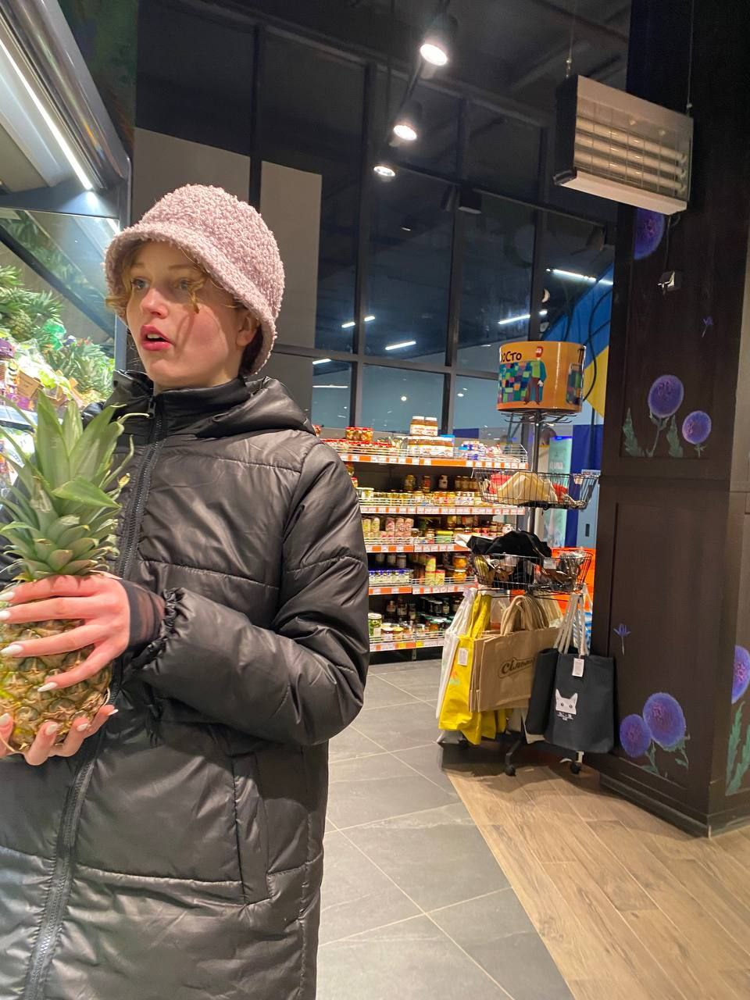
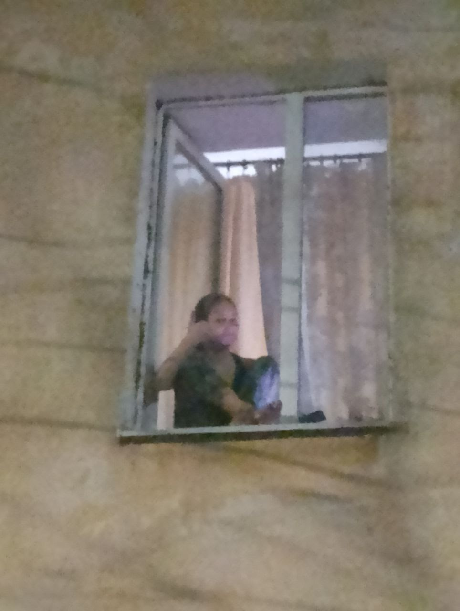
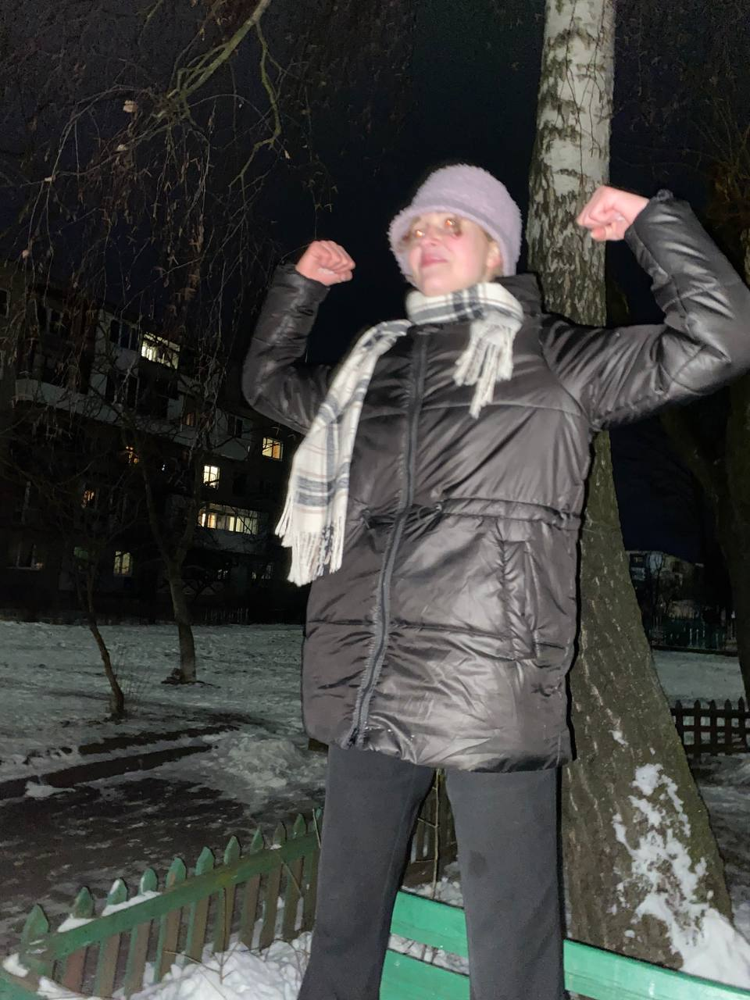
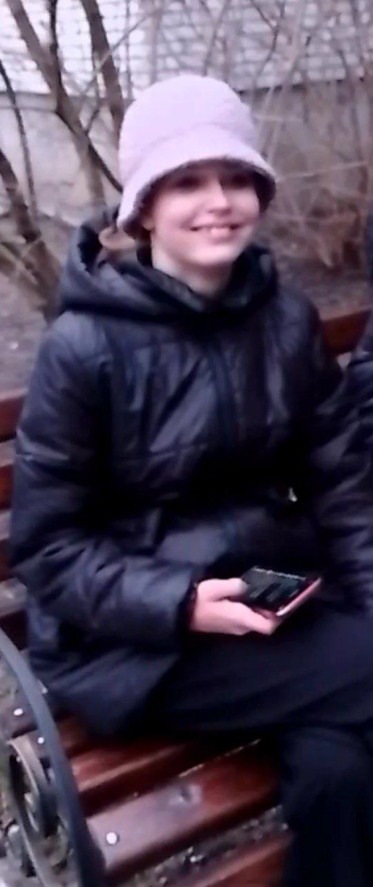
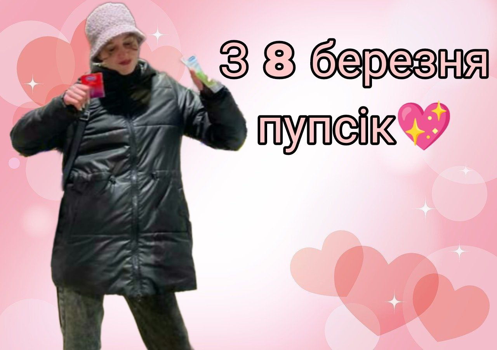

Вітаю сонечко з святом)
У нас сьогодні вже 8 березня, ахуїть, да? і я вахуі
ну корочі, хочеться сказать спасіба, шо ти така крута, постійно
слухаєш, розказуєш, питаєш, цікавишся, радиш, ну вот це все короче, ну ти пон
Тепер пора би вспомнить з чого все почалось
Все почалось з того шо Олежику вапще не спалось, і від скукі лежачи в себе дома вроде він рішив
зайти в дв. Побачив шо його лайкнула Ніка якась, вони поговорили, і він
рішив шо вона крута. Да, шо робила
Ніка в той час і чому не спала йому ні панятна,
ну вона не послушна просто походу
І вот саме так вони почали трендіть, а потім і гулять
Перша обща фотка, по якій зразу замітно шо то йобнуті діти

Тут походу ти в Дубаях, і ти щас віддихаєш
а це ахуенна реклама ананасів в Сільпо

Це дехто передивилась рапунцель і рішила повторити її

Дальше ти мені показала якусь забівну даму, короче во це

А це я проста по пріколу вставив звзвзазхах

Короче, сама суть, вітаю з святом, будь веселою і позитивною, а то абіда на все життя

І це все шо я цікаве найшов, остальне все в інших є напевно, так шо да, в мене мало є нажаль, так б може побільше зробив
P.S - сорі шо так карикатурно, я ше проста тіки навчився( я не міг
нормально зробити під телефон, там був красивенький світло фіолетовий фон з малюначкамі, бо я знаю
шо ти любиш фіолетовий, але на телефоні воно не показує тому просто колір( все, я надіюсь
тебе хотя б улибнуло, вот якось так ну і ти сонечко, ніколи цього не забувай, висипайся, не сумуй, і все буде в тебе чікі пукі